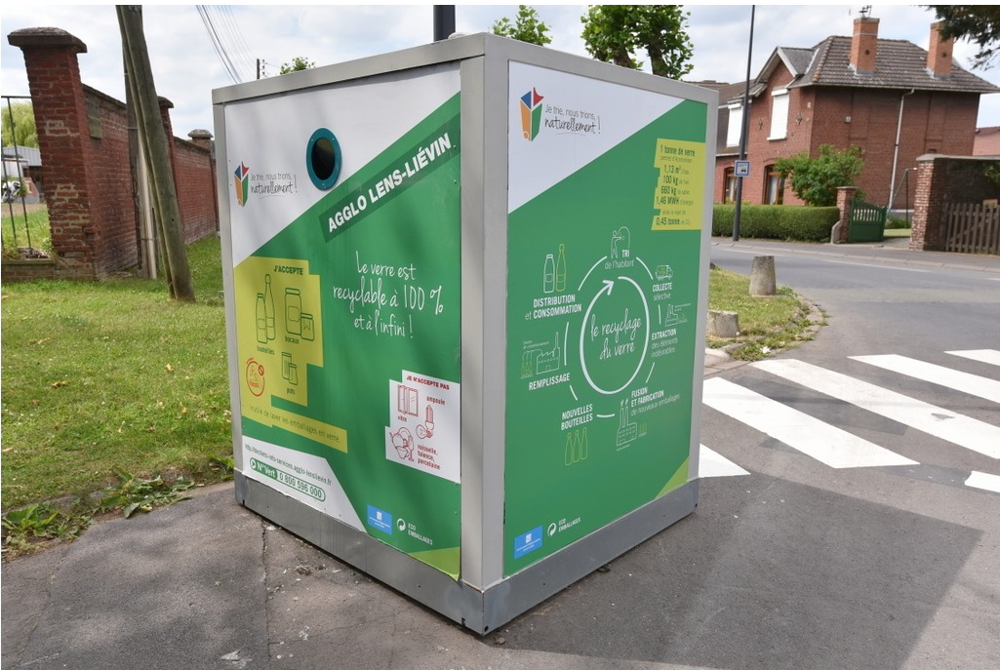

EMBALLAGES EN VERRE (contenants verts)
Aujourd'hui, la collecte des emballages en verre (pots, bouteilles…) est assurée sur les communes de la Communauté d’agglomération, soit par une collecte en porte à porte à l’aide de caissettes vertes dédiées, soit en vous rendant à la borne à verre.
A partir du 1er janvier 2018, le verre ne sera plus collecté en porte à porte mais via des bornes d’apport volontaire.
Courant 2017, environ 200 bornes d’apport volontaire aériennes supplémentaires seront installées sur le territoire pour la collecte du verre, portant ainsi le parc total à 530 bornes, sur la base d’une borne pour environ
500 habitants.
C’est la poursuite d’un mouvement citoyen bien engagé : les habitants apportent de plus en plus leurs emballages en verre (bouteilles, bocaux et contenants en verre) à la borne la plus proche de chez eux plutôt que d’attendre
le jour de collecte en porte-à-porte.
A partir de 2018, chaque habitant aura forcément une borne proche de chez lui !
Attention : ne sont pas recyclables et doivent être jetés avec les ordures ménagères résiduelles (contenants bordeaux) les bouchons, capsules et couvercles et la vaisselle.
Le saviez-vous ?
Le verre est recyclable à 100 % et à l’infini !
- Aujourd’hui, 7 bouteilles sur 10 sont recyclées. L’objectif est de 8 bouteilles sur 10.
- 1 tonne de verre permet d’économiser :
- • 1,13 M3 d’eau
- • 100 kg de fuel
- • 660 kg de sable
- • 1,46 MWH d’énergie
- • évite le rejet de 0,45 tonne de CO2
Pour tout renseignement complémentaire sur ce service, vous pouvez :
- • consulter la FAQ dédiée , espace où figure nombre d’informations et de renseignements utiles, cliquez ici.
- • nous poser une question en remplissant le formulaire accessible ici
- • composer le n° vert gratuit :
